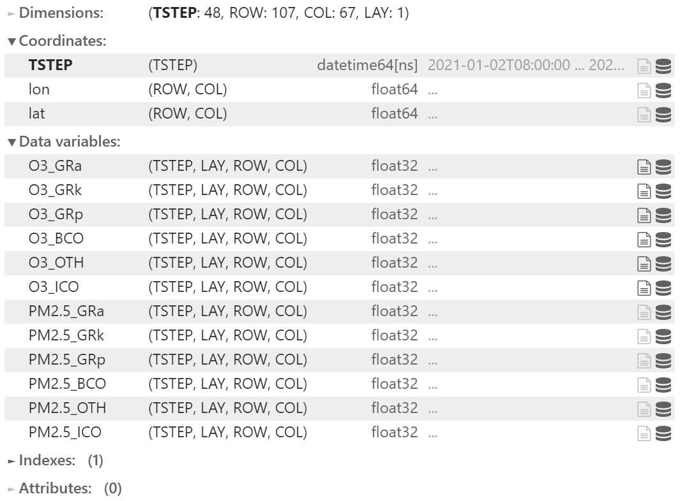

测试DataPro文件夹下的PrePro.py
1. 测试heavy_sampling_method()函数
import pandas as pd
from MeteoPy import heavy_sampling_method
# # 查看测试数据
test_file = '../TestData/test-30min.xlsx'
test_data = pd.read_excel(test_file, index_col=0)
test_data
output:
| DR | UR | DLR | ULR | |
|---|---|---|---|---|
| TIMESTAMP | ||||
| 2017-04-01 12:00:00 | 930.000000 | 126.400000 | 288.900000 | 484.400000 |
| 2017-04-01 12:30:00 | 915.066667 | 123.993333 | 290.366667 | 490.270000 |
| 2017-04-01 13:00:00 | 909.866667 | 123.683333 | 291.906667 | 501.396667 |
| 2017-04-01 13:30:00 | 891.800000 | 121.626667 | 292.163333 | 510.653333 |
| 2017-04-01 14:00:00 | 845.766667 | 116.406667 | 292.193333 | 516.360000 |
| 2017-04-01 14:30:00 | 773.556667 | 106.466667 | 293.266667 | 515.576667 |
| 2017-04-01 15:00:00 | 686.596667 | 96.480000 | 295.806667 | 516.000000 |
| 2017-04-01 15:30:00 | 585.230000 | 83.264667 | 296.546667 | 510.566667 |
| 2017-04-01 16:00:00 | 477.170000 | 70.346000 | 298.900000 | 502.723333 |
| 2017-04-01 16:30:00 | 365.630000 | 56.013000 | 297.413333 | 491.070000 |
| 2017-04-01 17:00:00 | 246.576667 | 37.756000 | 297.253333 | 475.110000 |
| 2017-04-01 17:30:00 | 124.262667 | 15.039333 | 295.976667 | 458.620000 |
| 2017-04-01 18:00:00 | 41.275000 | 10.658000 | 293.276667 | 444.156667 |
| 2017-04-01 18:30:00 | 12.676706 | 6.802412 | 293.643333 | 432.466667 |
1.1 第一类小时平均
# # 测试函数
start_time = '2017-04-01 12:00:00'
end_time = '2017-04-01 19:00:00'
heavy_sampling_method(test_data, start_time, end_time, '1h', 'mean', type=0)
DatetimeIndex(['2017-04-01 12:00:00', '2017-04-01 13:00:00',
'2017-04-01 14:00:00', '2017-04-01 15:00:00',
'2017-04-01 16:00:00', '2017-04-01 17:00:00',
'2017-04-01 18:00:00', '2017-04-01 19:00:00'],
dtype='datetime64[ns]', freq='H')
重抽样计算:2017-04-01 12:00:00 用时:0.013964653015136719s
重抽样计算:2017-04-01 13:00:00 用时:0.016954660415649414s
重抽样计算:2017-04-01 14:00:00 用时:0.019945859909057617s
重抽样计算:2017-04-01 15:00:00 用时:0.024930715560913086s
重抽样计算:2017-04-01 16:00:00 用时:0.026925086975097656s
重抽样计算:2017-04-01 17:00:00 用时:0.02991652488708496s
重抽样计算:2017-04-01 18:00:00 用时:0.03392171859741211s
重抽样计算:2017-04-01 19:00:00 用时:0.03690004348754883s
| DR | UR | DLR | ULR | |
|---|---|---|---|---|
| 2017-04-01 12:00:00 | 930.000000 | 126.400000 | 288.900000 | 484.400000 |
| 2017-04-01 13:00:00 | 912.466667 | 123.838333 | 291.136667 | 495.833333 |
| 2017-04-01 14:00:00 | 868.783333 | 119.016667 | 292.178333 | 513.506667 |
| 2017-04-01 15:00:00 | 730.076667 | 101.473333 | 294.536667 | 515.788333 |
| 2017-04-01 16:00:00 | 531.200000 | 76.805333 | 297.723333 | 506.645000 |
| 2017-04-01 17:00:00 | 306.103333 | 46.884500 | 297.333333 | 483.090000 |
| 2017-04-01 18:00:00 | 82.768833 | 12.848667 | 294.626667 | 451.388333 |
| 2017-04-01 19:00:00 | 12.676706 | 6.802412 | 293.643333 | 432.466667 |
1. 2第二类小时平均
heavy_sampling_method(test_data, start_time, end_time, '1h', 'mean', type=1)
DatetimeIndex(['2017-04-01 12:00:00', '2017-04-01 13:00:00',
'2017-04-01 14:00:00', '2017-04-01 15:00:00',
'2017-04-01 16:00:00', '2017-04-01 17:00:00',
'2017-04-01 18:00:00', '2017-04-01 19:00:00'],
dtype='datetime64[ns]', freq='H')
重抽样计算:2017-04-01 13:00:00 用时:0.006975889205932617s
重抽样计算:2017-04-01 14:00:00 用时:0.01096034049987793s
重抽样计算:2017-04-01 15:00:00 用时:0.013952016830444336s
重抽样计算:2017-04-01 16:00:00 用时:0.01598215103149414s
重抽样计算:2017-04-01 17:00:00 用时:0.0179443359375s
重抽样计算:2017-04-01 18:00:00 用时:0.020936250686645508s
重抽样计算:2017-04-01 19:00:00 用时:0.02293086051940918s
| DR | UR | DLR | ULR | |
|---|---|---|---|---|
| 2017-04-01 13:00:00 | 922.533333 | 125.196667 | 289.633333 | 487.335000 |
| 2017-04-01 14:00:00 | 900.833333 | 122.655000 | 292.035000 | 506.025000 |
| 2017-04-01 15:00:00 | 809.661667 | 111.436667 | 292.730000 | 515.968333 |
| 2017-04-01 16:00:00 | 635.913333 | 89.872333 | 296.176667 | 513.283333 |
| 2017-04-01 17:00:00 | 421.400000 | 63.179500 | 298.156667 | 496.896667 |
| 2017-04-01 18:00:00 | 185.419667 | 26.397667 | 296.615000 | 466.865000 |
| 2017-04-01 19:00:00 | 26.975853 | 8.730206 | 293.460000 | 438.311667 |
2. 测试WRF_Chem_getvars()类
import os
import xarray as xr
from MeteoPy import WRF_Chem_getvars
2.1 查看数据文件夹内容
path = '../TestData/WRF-Chem_out/'
file_list = os.listdir(path)
file_list
output:
['CCTM_SA_ACONC_v532_gcc_190316_20210102.nc',
'CCTM_SA_ACONC_v532_gcc_190316_20210103.nc']
2.2 测试类
path = '../TestData/WRF-Chem_out/'
which = ['O3', 'PM2.5']
ncfile = '../TestData/WRF-Chem_out/202101_O3_PM25.nc'
WRF_Chem_getvars(path, which, ncfile)
output:
../TestData/WRF-Chem_out//CCTM_SA_ACONC_v532_gcc_190316_20210102.nc: 合并完成！
../TestData/WRF-Chem_out//CCTM_SA_ACONC_v532_gcc_190316_20210103.nc: 合并完成！
合并完成！
2.3 再次查看数据文件夹内容
# # 查看是否生成合并后的数据
path = '../TestData/WRF-Chem_out/'
file_list = os.listdir(path)
file_list
output:
['202101_O3_PM25.nc',
'CCTM_SA_ACONC_v532_gcc_190316_20210102.nc',
'CCTM_SA_ACONC_v532_gcc_190316_20210103.nc']
2.4 查看202101_O3_PM25.nc，是否修改维度成功
xr.open_dataset(ncfile)
